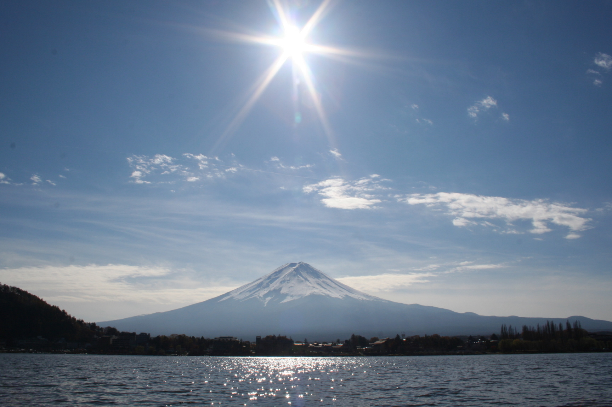

One cycle from the selected hour. Pause freezes the preview. Stop saves the nearest 15 minutes.

“Mount Fuji from Lake Kawaguchi” by Subramaniam K V. Wikimedia Commons · CC BY 3.0. Original photograph, unmodified.
The photograph informs the silhouette, snow cover and layered foothills. The landscape behind this panel is an original, texture-free shader interpretation with a different light and composition, not an animated photograph.
Technique references: heightfield rendering and atmospheric depth, as seen in iq’s Elevated; fractal Brownian motion for clouds and terrain. No Shadertoy source code is copied.